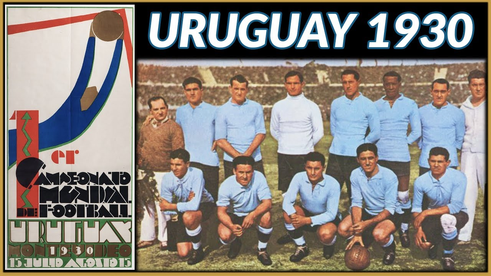

MUNDIAL A MUNDIAL
La Copa Mundial de la FIFA Uruguay 1930 fue la primera
edición del Campeonato Mundial de Fútbol organizado por la
FIFA. Se desarrolló en Uruguay entre el 13 y el 30 de julio
de 1930. La FIFA decidió entregar la organización del torneo
a Uruguay en conmemoración del centenario de la Jura de la
Constitución, que la nación celebraba durante julio de ese
mismo año, entre otros motivos. En el torneo participaron
trece selecciones nacionales (12 invitadas más el
organizador), divididas en 4 grupos: 3 grupos de 3 equipos y
un grupo de cuatro equipos. Los primeros dos encuentros en
la historia de la Copa Mundial tuvieron lugar
simultáneamente el 13 de julio, fecha en la que Estados
Unidos se impuso a Bélgica por 3:0, mientras que Francia
superó a México por 4-1. El primer tanto de la competición
fue anotado por el jugador francés Lucien Laurent. Las
selecciones de Argentina, Estados Unidos, Uruguay y
Yugoslavia accedieron a las semifinales tras imponerse en
sus respectivos grupos. En la final, el anfitrión Uruguay
venció a Argentina por 4-2, ante más de 60000 espectadores,
ganando su primer título mundial organizado por la
FIFA.

La Copa Mundial de la FIFA Italia 1934 fue la segunda
edición del Campeonato Mundial de Fútbol masculino
organizado por la FIFA. Tuvo lugar en Italia entre el 27 de
mayo y el 10 de junio de 1934. Después del éxito de la
edición de 1930 en Uruguay, esta fue la primera vez que el
campeonato se celebraba en un país de Europa. Debido al
número de federaciones interesadas en participar, la FIFA
estableció una fase de clasificación para cubrir las 16
plazas disponibles, en la que incluso Italia participó a
pesar de ser el anfitrión. Uruguay, ganadora en 1930, se
negó a participar porque Italia no quiso acudir a su
Mundial, siendo hasta la fecha el único campeón que no ha
querido defender su título. De hecho, solo participaron
cuatro Estados no europeos: Argentina, Brasil, Estados
Unidos y Egipto, primer país de África que tomaba parte. En
total, diez países debutaron en la competición. La
organización eliminó la fase de grupos y cambió el formato
por una fase de eliminación directa a partido único, algo
que solo se repetiría en la edición de 1938. En caso de
empate se jugaría una prórroga de 30 minutos y, si el
resultado seguía igual, debía disputarse un encuentro de
desempate al día siguiente. La final entre Italia y
Checoslovaquia, celebrada en el Estadio Nacional del Partido
Nacional Fascista, finalizó con victoria de los anfitriones
por 2-1 y ha sido la primera que necesitó de un tiempo
suplementario para resolverse. Al margen de lo deportivo, la
Copa Mundial de 1934 fue utilizada por el dictador Benito
Mussolini desde un punto de vista propagandístico y
nacionalista, con el objetivo de vender al exterior los
logros e ideales del fascismo italiano. La selección
transalpina, presionada para conseguir el título, ha sido
acusada de gozar de arbitrajes favorables durante este
torneo.

La Copa Mundial de la FIFA Francia 1938 fue la tercera
edición del campeonato mundial de fútbol masculino
organizado por la FIFA. Se celebró en Francia entre el 4 de
junio y el 19 de junio de 1938. La organización mantuvo por
última vez el formato de la edición de 1934, consistente en
una fase de eliminación directa a partido único. En caso de
empate se jugaría una prórroga de 30 minutos y, si el
resultado seguía igual, debía celebrarse un encuentro de
desempate al día siguiente. A partir de 1938, el país
organizador y el campeón de la anterior edición se
clasificarían directamente. El torneo estuvo marcado por el
clima prebélico que se vivía antes de la Segunda Guerra
Mundial. Solo participaron 15 países porque Austria,
clasificada para la fase final, había sido anexionada por la
Alemania nazi y su plaza quedó vacante. Además, 12 de las 15
selecciones eran europeas y apenas hubo tres equipos
participantes del resto del mundo. América del Sur dio la
espalda al evento en protesta por la elección de un Estado
europeo, con las ausencias destacadas de Argentina
(aspirante a organizarlo) y Uruguay. Los únicos
representantes americanos fueron Brasil y una debutante
Cuba. Además, Indias Orientales Neerlandesas (actual
Indonesia) fue el primer país de Asia en participar. En la
final, celebrada en el estadio de Colombes, Italia se impuso
a Hungría por 4-2 y se convirtió en el primer país que
obtuvo el bicampeonato. El seleccionador Vittorio Pozzo fue
también el primer entrenador (y hasta la fecha el único) que
ha ganado la Copa Mundial en dos ocasiones. Cuando la
Segunda Guerra Mundial estalló en 1939, los acontecimientos
bélicos impidieron a la FIFA organizar la Copa Mundial en
sus ediciones subsecuentes, y no la retomó hasta la edición
de 1950 en Brasil.
It

La Copa Mundial de la FIFA Brasil 1950 fue la cuarta
edición del campeonato mundial de fútbol masculino
organizado por la FIFA. Tuvo lugar en Brasil desde el 24 de
junio hasta el 16 de julio de 1950. La FIFA recuperó la Copa
Mundial después de que las ediciones previstas para 1942 y
1946 quedasen suspendidas por la Segunda Guerra Mundial. En
homenaje a los 25 años de presidencia de Jules Rimet, el
trofeo de campeones fue renombrado «Copa Jules Rimet». Las
sucesivas retiradas provocaron que solo participasen 13
países: 6 europeos y 7 americanos. Destacaron especialmente
el regreso de Uruguay, ausente en los dos últimos torneos, y
el debut de Inglaterra luego de que las federaciones
británicas reingresasen en la FIFA. Debido a su formato de
competición, usado solo en esta edición, la Copa Mundial de
1950 fue la única en la que no se celebró una final. En la
fase preliminar los 13 participantes se dividían en cuatro
grupos para enfrentarse todos contra todos en una vez. Los
ganadores de cada grupo (Brasil, España, Suecia y Uruguay)
pasaban después a una liguilla de cuatro bajo el mismo
sistema, de la que saldría el campeón. El balón oficial fue
Duplo T, fabricado por una compañía local. La Copa Mundial
de 1950 es especialmente recordada por el «Maracanazo»,
nombre por el que se conoce a la victoria de Uruguay sobre
Brasil en la última jornada. A los brasileños les bastaba
con un empate gracias a sus cómodas victorias contra
españoles y escandinavos, mientras que a los charrúas solo
les valía ganar. Sin embargo, saltó la sorpresa: a pesar de
que Friaça adelantó a los locales, los visitantes remontaron
gracias a sendos tantos de Schiaffino y Ghiggia. Con el
marcador final de 1–2, Uruguay ganó su segunda Copa Mundial
e igualó a Italia en el palmarés de ese entonces.

La Copa Mundial de la FIFA Suiza 1954 fue la quinta edición
de la Copa Mundial de Fútbol, realizada en Suiza, entre el
16 de junio y el 4 de julio de 1954. Así, la Copa Mundial
regresó a Europa, donde Suiza fue elegida sede por ser la
única nación con la infraestructura requerida para el
evento. El mundial contó con la participación de 16
selecciones nacionales, las cuales fueron divididas en 4
grupos de 4. También marca el inicio del estrecho vínculo
con la televisión, al ser el primer evento en ser
transmitido a por lo menos 8 países de Europa. El partido
por la gran final se disputó entre Hungría y Alemania
Federal. En el llamado Milagro de Berna, los alemanes
derrotaron a los favoritos húngaros por 3:2 y se coronaron
campeones por primera vez de la Copa Mundial. El balón
oficial fue Swiss World Champion, fabricado por una compañía
local.

La Copa Mundial de la FIFA Suecia 1958 fue la sexta edición
de la Copa Mundial de Fútbol. Fue realizada en la primavera
de Suecia, entre el 8 y el 28 de junio de 1958. Participaron
en la fase final dieciséis selecciones nacionales; las
selecciones debutantes de Unión Soviética, Irlanda del Norte
y Gales lograron quedar entre los primeros ocho finalistas.
Por primera (y única) vez en la historia del torneo, las
cuatro selecciones del Reino Unido compitieron en la fase
final. El partido final se desarrolló en Estocolmo, entre
Brasil y Suecia. Con una gran actuación de Didí y el juvenil
Pelé, los brasileños se coronaron por primera vez como
campeones del mundo al derrotar a los locales por 5-2 y se
convirtió en la primera selección en ganar un mundial fuera
de su continente. Desde esta versión el certamen comenzó a
ser intercalado con América hasta 1998. El balón oficial fue
Top Star, fabricado por una compañía local.

La Copa Mundial de la FIFA Chile 1962 fue la séptima
edición de la Copa Mundial de Fútbol, realizada en Chile,
entre el 30 de mayo y el 17 de junio de 1962. Tras Brasil
1950, el principal campeonato de fútbol internacional
regresó a América después de haberse disputado dos veces
consecutivas en Europa. Chile fue elegido como la sede en
1956 y la organización, que adoptó el lema «Porque nada
tenemos, lo haremos todo», superó diversas dificultades,
principalmente respecto a la infraestructura necesaria, lo
que amenazó albergarlo, en especial tras la ocurrencia del
terremoto de Valdivia de 1960 —el más potente registrado
instrumentalmente en la historia universal con una magnitud
de 9,5 MW— que afectó al territorio sur del país.
Finalmente, fue celebrado en cuatro sedes, el segundo menor
número en su historia: las ciudades de Arica, Rancagua,
Santiago y Viña del Mar En el ámbito deportivo, participaron
16 selecciones, tuvo la mayor cifra de goleadores —seis con
cuatro tantos— y es conocido como el «Mundial más violento
de la historia» —debido a sus numerosos lesionados y
partidos como la Batalla de Santiago entre Chile e Italia.
Se destacó el único «gol olímpico» que ha sido anotado en el
torneo, obra del colombiano Marcos Coll ante la Unión
Soviética, y las habilidades del brasileño Garrincha,
reconocido como el «mejor jugador» del evento mientras su
compatriota Pelé estaba lesionado. La final fue jugada en
el Estadio Nacional en Santiago, donde Brasil consiguió su
segundo título mundial al ganar a Checoslovaquia por 3-1, la
última vez que ha ocurrido consecutivamente. Los locales
alcanzaron el tercer puesto al vencer a Yugoslavia por 1-0,
el «principal logro del fútbol chileno en su historia». El
certamen tuvo el estreno de un balón con forma esférica
regular: Crack, fabricado por una compañía local, el uso de
los goles tras los puntos para definir los clasificados en
los grupos: su promedio,y música oficial: la canción «El
rock del Mundial» de la banda local Los Ramblers.

La Copa Mundial de la FIFA Inglaterra 1966 fue la octava
edición de la Copa Mundial de Fútbol. Fue realizada en
Inglaterra —país donde nació el fútbol en 1863—, entre el 11
y el 30 de julio de 1966. Dieciséis selecciones participaron
en la ronda final, siendo divididas en cuatro grupos de 4
equipos donde los dos primeros de cada grupo avanzaron a la
ronda de cuartos de final, a partir de la cual se dieron
duelos de eliminación directa. La final fue disputada en el
estadio Wembley entre Inglaterra y Alemania Federal. Tras
empatar a dos goles durante el tiempo reglamentario, se
realizó una prórroga en que Geoff Hurst anotó uno de los
goles más polémicos de la historia de este deporte, el cual
no entró a la portería. Finalmente, un cuarto gol le daría a
Inglaterra su primera y, hasta el momento, única Copa
Mundial, de las manos de la reina Isabel II. El goleador del
torneo fue el jugador portugués Eusébio, con nueve goles.
Por otro lado, por primera vez en la historia de la Copa
Mundial se presentó una mascota oficial, el león Willie. El
balón oficial fue Challenge 4-Star, fabricado por la
compañía local Slazenger.

La Copa Mundial de la FIFA México 1970 fue la novena
edición de la Copa Mundial de Fútbol. Se celebró en México,
entre el 31 de mayo y el 21 de junio. Un total de 16
selecciones nacionales participaron en la ronda final,
reunidas en cuatro grupos de 4 equipos; luego los dos
primeros de cada sector avanzaron a la ronda de cuartos de
final, a partir de la cual se dieron duelos de eliminación
directa. Fue el primer mundial en donde se implementaron las
tarjetas amarilla (amonestación) y roja (expulsión). Este
torneo es considerado por diversos expertos como uno de los
mejores en la historia del fútbol, debido tanto a su juego
limpio (no hubo expulsados en todo su desarrollo) como a los
diversos planteles que asistieron con algunos de los mejores
jugadores de este deporte, como Pelé y Franz Beckenbauer.
Durante los cuartos de final se dieron grandes exhibiciones
futbolísticas: Uruguay venció a Unión Soviética con un gol
en los minutos finales de la prórroga, Italia remontó el
partido contra México con un categórico 4-1, Brasil venció
4-2 a Perú en un partido con un gran despliegue ofensivo de
ambos bandos (49 tiros a puerta en total: 27 brasileños y 22
peruanos) y la Alemania Federal remontó el partido ante la
campeona defensora Inglaterra en la prórroga, luego de ir
abajo por dos goles. Los seleccionados de la Alemania
Federal, Brasil, Italia y Uruguay, todos campeones de
torneos previos, llegaron a las semifinales. Además, Brasil,
Italia y Uruguay habían obtenido anteriormente dos veces la
copa, por lo que eran candidatos a obtenerla en propiedad en
caso de coronarse campeones. Mientras Brasil derrotó a
Uruguay por 3-1 en el Estadio Jalisco, Italia y la Alemania
Federal se enfrentaron en el Estadio Azteca en uno de los
partidos más memorables y, quizás, el mejor de la historia.
Luego de los noventa minutos, ambos equipos se encontraron
empatados a 1 gol, por lo que se realizó una prórroga que
terminó con victoria italiana por 4-3. Este juego es
conocido como el «partido del siglo». En la final, Brasil
derrotó a Italia por 4-1. Así, el equipo sudamericano se
coronó por tercera vez en su historia como campeón del
mundo, adjudicándose definitivamente la Copa Jules
Rimet.

La Copa Mundial de la FIFA Alemania Federal 1974 fue la
décima edición de la Copa Mundial de Fútbol. Fue realizada
en la Alemania Occidental (RFA) y en Berlín Occidental,
entre el 13 de junio y el 7 de julio de 1974. Dieciséis
selecciones nacionales participaron en el torneo que, como
novedad, cambió el sistema en la segunda ronda: en lugar de
realizar enfrentamientos a eliminación directa entre los
ocho equipos que avanzaron, fueron divididos en 2 grupos de
4; los ganadores de cada grupo pasaron a la final, y los
segundos, a disputar el partido por el tercer puesto. El
partido final fue disputado por los Países Bajos y la RFA,
que ganó por 2-1. Este torneo vio por única ocasión, en fase
de grupos, a Alemania Democrática y Alemania Federal
enfrentarse entre sí en un partido oficial. Este torneo dio
a conocer al mundo a la llamada «Naranja Mecánica», la
selección neerlandesa, cuyo juego destacaba por su «fútbol
total», una táctica innovadora en la que todos defendían y
atacaban. La estrella del equipo y uno de los mejores
jugadores del campeonato fue Johan Cruyff, que jugaba en el
Fútbol Club Barcelona, equipo al que también entrenaría años
más tarde. En esta edición del certamen apareció por primera
vez la actual versión del trofeo. Se habían presentado 54
proyectos para el nuevo trofeo y se eligió el diseño del
italiano Silvio Gazzaniga, de oro macizo, cinco kilos de
peso y base de malaquita, ya que la Copa Jules Rimet había
sido concedida a perpetuidad a Brasil en el torneo anterior.
Además en esta edición, ocurre que por primera vez se
expulsa por medio de tarjeta roja y por dopaje a un jugador.
La regla de la tarjeta roja fue instaurada en el mundial
anterior pero, al no haber expulsados en dicho certamen, su
estreno se produjo para esta cita. El primero en ser
expulsado por la tarjeta roja fue el chileno Carlos Caszely,
en su primer partido mundialista frente al equipo local.El
segundo jugador en ser expulsado y el primero por dopaje fue
el haitiano Ernst Jean-Joseph en el partido contra
Italia.

La Copa Mundial de la FIFA Argentina 1978 fue la undécima
edición de la Copa Mundial de Fútbol y se desarrolló en
Argentina, entre el 1 de junio y el 25 de junio de 1978. La
Copa del Mundo volvía así a Sudamérica por primera vez desde
Chile en 1962. El torneo fue disputado en seis estadios,
repartidos en las ciudades de Buenos Aires, Rosario, Mar del
Plata, Córdoba y Mendoza. La mascota de este Mundial fue
Gauchito y la pelota oficial sufrió un cambio revolucionario
con la aparición de la Adidas Tango. Esta pelota se
convirtió en un clásico del diseño que iba a perdurar
durante cinco mundiales, y contaba con mayor
impermeabilización que los diseños anteriores. En el torneo
no jugaron el joven Diego Armando Maradona, en ese momento
con diecisiete años, ni la estrella neerlandesa Johan
Cruyff. Pero sí lo hicieron otros consagrados futbolistas
internacionales de la época como Johan Neeskens, Teófilo
Cubillas, Zico, Dino Zoff y Mario Kempes, además de Michel
Platini, Karl-Heinz Rummenigge y Paolo Rossi, entre otros
valores destacados. El entonces campeón del mundo Paul
Breitner fue el único jugador que decidió no participar en
repudio explícito a la Junta Militar. La selección local fue
campeona, cuya principal figura fue Mario Kempes, reconocido
como el mejor jugador del evento. Se jugó con el mismo
sistema de eliminación que en Alemania Federal 1974: una
primera ronda con cuatro grupos clasificatorios, donde los
dos primeros de cada uno pasaron a la segunda fase, en la
que se definieron los dos finalistas. La final se jugó entre
los Países Bajos, ganador del grupo A, y Argentina, que
clasificó ganando el grupo B. Fue un partido muy disputado
en el que los equipos debieron ir a tiempo suplementario, ya
que en los 90 minutos habían empatado 1:1. Finalmente, con
goles de Kempes (2) y Daniel Bertoni (1), la selección
albiceleste se impuso por 3:1, levantando la copa por
primera vez, luego de que se le hubiera escapado 48 años
antes en Uruguay 1930, al perder por 4:2 en la final, ante
el combinado local. El torneo se disputó mientras en la
Argentina gobernaba una dictadura que había impuesto un
régimen terrorista de Estado, boicoteado por algunas
organizaciones internacionales de derechos humanos. La
decisión de realizar el torneo en Argentina, las relaciones
de la dictadura militar con la FIFA, algunos resultados
deportivos cuestionados y los actos de corrupción han sido
materia de investigación y debate.

La Copa Mundial de la FIFA España 1982 fue la duodécima
edición del campeonato mundial de fútbol masculino
organizado por la FIFA. Se celebró en España desde el 13 de
junio hasta el 11 de julio de 1982. El campeonato contó por
primera vez con la participación de 24 selecciones
nacionales, a través de una ampliación de los cupos
continentales en la fase clasificatoria. Para darles cabida
se hicieron cambios en el sistema de competición: hubo un
formato con dos liguillas y fase final que solo sería
utilizado en esta edición. El comité organizador habilitó un
total de 17 estadios en 14 sedes, incluyendo el Camp Nou
para la inauguración y el Santiago Bernabéu para la gran
final. La Copa Mundial de 1982 fue la primera en contar con
representantes de todos los continentes.1 La selección de
Italia se proclamó campeona mundial por tercera vez, luego
de haber derrotado en la final a Alemania Federal por 3:1.
Los transalpinos no tuvieron un buen comienzo al haberse
clasificado con tres empates, pero mejoraron su juego a
partir de la segunda fase y se llevaron el título sin haber
concedido una sola derrota.El más destacado del torneo fue
Paolo Rossi, ganador de la Bota de oro al máximo goleador y
del Balón de oro al mejor jugador. Por otra parte, el
capitán italiano Dino Zoff se convirtió en el futbolista de
mayor edad que levantaba el título de campeones, a los 40
años.4 Entre los momentos de esta edición, el partido entre
Italia y Brasil (3:2) celebrado en el estadio de Sarriá
sigue siendo recordado como uno de los mejores que se hayan
disputado en la historia de la Copa Mundial. Otros hechos
destacados fueron la semifinal entre Francia y Alemania
Federal, la primera resuelta en la tanda de penaltis; el
atractivo juego de la selección brasileña de Telê Santana,
comandada por Zico, Falcão y Sócrates; la irrupción del
hermano del emir de Kuwait en mitad de un juego; la goleada
por 10:1 de Hungría a El Salvador, y el resultado pactado
entre Alemania y Austria que clasificaba a ambos para la
segunda ronda, por el cual la FIFA tuvo que introducir
horarios unificados en la última jornada de la fase de
grupos.8 En lo que respecta a España, la Copa Mundial de
1982 ha sido el primer gran acontecimiento organizado en el
país tras el restablecimiento de la democracia. Los
principales estadios del país fueron remodelados, se
invirtió dinero en actualizar la red de transportes, y la
experiencia acumulada serviría para obtener la concesión de
futuros eventos como los Juegos Olímpicos de 1992. Sin
embargo, la selección nacional no cumplió con las
expectativas y cayó en la segunda ronda con tan solo una
victoria. La mascota Naranjito se convirtió en el símbolo
del torneo.

La Copa Mundial de la FIFA México 1986 fue la decimotercera
edición de la Copa Mundial de Fútbol, que se desarrolló
entre el 31 de mayo y el 29 de junio. México se convirtió en
el primer país en celebrar dos veces una Copa del Mundo,
cuando el Comité Ejecutivo de la FIFA, tras una reunión en
Estocolmo, Suecia en mayo de 1983, decidió sustituir la sede
seleccionada en 1974, Colombia, que tuvo que declinar en
noviembre de 1982 ante la imposibilidad de cumplir con los
requerimientos que FIFA exigió para celebrar el evento.
Fueron 24 selecciones las que acudieron al torneo y 52
partidos celebrados, al igual que en el mundial anterior. La
mascota fue Pique y el balón oficial fue el Adidas Azteca
México, el primero fabricado con materiales sintéticos, lo
que aumentaba la impermeabilidad y la durabilidad, brindando
mejor rendimiento en campos de juego duros, con mucha
humedad y a grandes alturas. En dos partidos de los cuartos
de final del torneo sucedieron hechos destacados y sin
precedentes en el fútbol: en el partido
Argentina-Inglaterra, Diego Maradona (que en el primer
tiempo fue golpeado duramente con un codazo por Terry
Butcher, que el árbitro no vio) convirtió dos de sus goles
más famosos, uno que consiguió tocando el balón con la mano
que el árbitro dio por legal y que el mismo jugador aceptó
después al afirmar que había sido la mano de Dios; minutos
después Maradona zarpó desde media cancha burlando a cuanto
adversario se cruzaba en su camino consiguiendo de esta
forma el mejor gol de los mundiales y uno de los mejores en
la historia del fútbol, conocido como el Gol del Siglo. Por
su parte, en la definición por tiros desde el punto penal
del partido Brasil-Francia, Bruno Bellone erró un disparo al
estrellarse el balón contra el poste, pero al rebotar en el
cuerpo del arquero Carlos Gallo entró al arco, siéndole
concedido. Los brasileños protestaron para que fuera
anulado, pero el árbitro rumano Ioan Igna ratificó su
decisión, que posteriormente fue avalada por la
International Board. Como otro dato anecdótico, en este
torneo también sucedieron dos expulsiones destacables:
Cayetano Ré (entrenador del seleccionado paraguayo) fue el
primer director técnico en la historia de los mundiales en
ser expulsado de la banca de su equipo en un partido, por
exceso de reclamos frente al árbitro búlgaro Bogdan Dotchev
durante el encuentro contra Bélgica que terminó en un empate
2 a 2. Mientras que el jugador uruguayo José Batista, tuvo
el deshonor de haber sufrido la expulsión más rápida de la
historia de los Mundiales, al recibir una tarjeta roja
cuando solo se llevaba 56 segundos del partido de su equipo
contra Escocia.

La Copa Mundial de la FIFA Italia 1990 fue la decimocuarta
edición de la Copa Mundial de Fútbol. Se desarrolló en
Italia, entre el 8 de junio y el 8 de julio de 1990. Italia
se convirtió en el segundo país en celebrar una Copa Mundial
en dos ocasiones distintas, ya que había organizado el
torneo en 1934. Un total de 24 selecciones nacionales
participaron en el evento, en donde hubo varias sorpresas,
como la participación de Camerún, que se convirtió en el
primer equipo africano en llegar a los cuartos de final,
llegando su colectivo a ser conocido como "los leones
indomables". La final fue jugada por segunda vez consecutiva
por Argentina y Alemania Federal, poco antes de su
unificación con Alemania Democrática. Ganaron los alemanes
por 1-0 gracias a un polémico penal pitado por el uruguayo
nacionalizado mexicano Edgardo Codesal Méndez en el minuto
83. Décadas más tarde, Codesal se defendió justificando que
su decisión fue la correcta,1 sin embargo el jugador alemán
Lothar Matthäus argumentó que la falta estuvo mal cobrada.
Algunos periodistas y analistas deportivos lo han
considerado como el mundial con el peor nivel futbolístico
de entre todos los realizados,[¿quién?] producto de las
reglas de juego de la época que favorecían a los equipos que
buscaban evitar el desarrollo del juego antes que
proponerlo, mediante acciones como faltas reiteradas y
violentas a los atacantes, demoras en la reanudación del
juego, permisividad de los árbitros para hacer respetar el
reglamento y búsqueda del empate antes que la victoria.
Consecuencia de lo anterior fue el hecho de que esta edición
tuvo la media de goles más baja de todos los mundiales: 2,21
por partido. Debido a esto, la FIFA decidió hacer diversas
reformas a las reglas que favorecieran al desarrollo del
juego y castigara fuertemente a quien buscara entorpecerlo,
a aplicar desde el próximo mundial, entre las cuales
destacan el otorgamiento de 3 puntos por victoria y la
decisión de prohibirle a los arqueros tomar el balón con las
manos tras recibir un pase de un compañero.

La Copa Mundial de la FIFA Estados Unidos 1994 fue la
decimoquinta edición de la Copa Mundial de Fútbol, y se
desarrolló en los Estados Unidos, entre el 17 de junio y el
17 de julio de 1994. Estados Unidos fue elegido como sede
del Mundial por primera vez en la historia, generando gran
polémica por ser un país sin tradición futbolística, debido
a la popularidad de otros deportes como el béisbol, el
fútbol americano, el hockey sobre hielo, y el baloncesto.
Sin embargo, y debido al desarrollo económico y a la
infraestructura de dicho país, el evento tuvo un gran éxito
marcando cifras históricas de asistencia de público y
recaudación financiera, imbatibles hasta el día de hoy, e
incluso permitió el desarrollo del soccer en Estados Unidos,
volviéndose con el pasar de los años en un deporte muy
popular en dicho país. Fue también la última Copa Mundial
que contó de 24 selecciones participantes, lo que permitía
la clasificación a octavos de final de los cuatro mejores
terceros lugares de la fase de grupos. Se desarrolló en 9
sedes cuyos estadios en promedio albergaron a 70.000
espectadores. Brasil e Italia se enfrentaron en la final en
el Estadio Rose Bowl de Pasadena, en la ciudad de Los
Ángeles. Previamente Brasil había sido el único país de
América ubicado en los cuartos de final siendo el resto
europeos. Tras empatar sin goles, tanto en el tiempo
reglamentario como en la prórroga, ambos equipos se
enfrentaron en la primera final de una Copa Mundial
determinada en una tanda de penaltis. Finalmente, el equipo
sudamericano se coronó tetracampeón luego que el italiano
Roberto Baggio errara su último tiro para dejar el marcador
3:2 a favor de la escuadra brasileña. Entre los jugadores
que destacaron se encuentran los brasileños Romário y
Bebeto, el italiano Roberto Baggio, el búlgaro Hristo
Stoichkov, el ruso Oleg Salenko, el rumano Gheorghe Hagi, el
neerlandés Dennis Bergkamp, el belga Michel Preud'homme, los
suecos Martin Dahlin y Kennet Andersson y el alemán Jürgen
Klinsmann. Por otro lado, el argentino Diego Armando
Maradona fue expulsado del torneo luego de detectarle
efedrina en un control antidopaje tras el partido ante
Nigeria y marcando un gol ante Grecia. La mascota del torneo
fue el perro Striker. La canción oficial del evento fue
"Gloryland" interpretada por Daryl Hall and the Sound of the
Blackness inspirada por un cántico popular antiabolicionista
estadounidense del siglo xix "El Himno de la Batalla de la
República". Igualmente, el torneo marcó el estreno del
Himno de la FIFA en la ceremonia previa de los partidos.
Roger Milla, futbolista camerunés de 42 años, se convirtió
en el jugador más veterano en jugar en un Mundial y también
en marcar un gol en un mundial (ante Rusia). Milla mantuvo
ese récord hasta 2014, cuando fue superado por el colombiano
Faryd Mondragón.

La Copa Mundial de la FIFA Francia 1998 fue la decimosexta
edición de la Copa Mundial de Fútbol, se desarrolló en
Francia, entre el 10 de junio y el 12 de julio de 1998.
Francia se convirtió en el tercer país en organizar dos
campeonatos (tras México e Italia), 60 años después del
mundial realizado en 1938. Por primera vez en la fase final
de la Copa Mundial participaron 32 selecciones nacionales
que se dividieron en una primera ronda de 8 grupos en los
que clasificaban los dos primeros de cada uno a octavos de
final y a un sistema de eliminación directa. La selección
local se coronó campeona por primera vez al derrotar en la
final del torneo realizada en el nuevo Estadio de Francia,
en Saint-Denis, a Brasil por 3:0. La sorpresa del torneo fue
el combinado de Croacia que en su primera participación tras
la desintegración de Yugoslavia, obtuvo el tercer lugar. En
este Mundial se mostraron 21 tarjetas rojas, récord en la
historia de las Copas del Mundo, hasta Alemania 2006, donde
se mostraron 28 tarjetas rojas. La mascota del torneo fue
Footix, un gallo azul, símbolo del país anfitrión.

La Copa Mundial de la FIFA Corea del Sur/Japón 2002 (en
coreano: 2002 FIFA 월드컵 한국/일본, 2002 FIFA Woldeu Keop
Hanguk/Ilbon; en japonés: 2002 FIFAワールドカップ 韓国/日本,
2002 FIFA Waarudo Kappu Kankoku/Nippon) fue la decimoséptima
edición de la Copa Mundial de Fútbol y se realizó en Corea
del Sur y Japón, entre el 31 de mayo y el 30 de junio de
2002. Este torneo fue el primero organizado en la historia
por dos países, el primero en realizarse fuera de Europa y
América, el primer mundial en realizarse en el siglo xxi, el
primero del tercer milenio y el primero en realizarse en
Asia. El torneo, en el que participaron 32 selecciones, tuvo
fuertes contrastes. Algunos equipos considerados de segundo
y tercer orden en el fútbol internacional lograron
excelentes resultados, como los semifinalistas Turquía y
Corea del Sur, mientras la debutante selección de Senegal
quedó entre los ocho primeros. Por el contrario, algunos de
los equipos favoritos fueron eliminados en la primera fase
como es el caso de Argentina y Francia, en el peor torneo de
un vigente campeón al obtener un solo punto y no marcar gol
alguno. Italia por su parte, fue eliminada polémicamente en
octavos de final. A pesar de esto, la final de la copa fue
disputada por dos de las principales potencias en la
historia del fútbol: Brasil y Alemania. En Yokohama, Brasil
obtuvo su quinto Mundial y amplió su historial como la
selección con más títulos en la historia del torneo. En el
partido por el tercer puesto contra Corea del Sur, Turquía
ganó 3-2, ocupando el tercer puesto en su segunda Copa
Mundial de la FIFA y marcó el gol más rápido en la historia
de la Copa Mundial de la FIFA (10,8 segundos después del
saque inicial). La Copa del Mundo de 2002 también fue la
última en utilizar la regla del gol de oro. Un aspecto
negativo del certamen fue la baja asistencia de público para
algunos partidos, como el que brindaron las selecciones de
Paraguay y Sudáfrica, donde se registraron 25 186
espectadores en un estadio con capacidad para casi 60 000
asistentes. Otro punto negro y decisivo en el desarrollo fue
la mala actuación de los árbitros,acusados de favorecer a la
selección surcoreana en los enfrentamientos contra Portugal,
en el último partido de la fase de grupos, y contra Italia y
España en octavos y cuartos de final. Finalmente, en 2015,
se demostró que estos encuentros fueron amañados por la
selección coreana, dos días después de un masivo arresto de
algunos mandatarios de la FIFA, quienes se encuentran
actualmente en prisión. El diario deportivo italiano
Corriere dello Sport, en su edición en papel del 29 de mayo
de 2015, publicó una detallada investigación la cual
concluye que Corea del Sur fue beneficiada por los árbitros
en sus duelos frente a Italia y España para poder avanzar
hasta semifinales del Mundial 2002. Estas denuncias se
produjeron en medio del caso de corrupción de la FIFA de
2015 en el que estaban involucrados altos directivos de la
FIFA. La selección italiana, se vio perjudicada por un
inusual récord de cinco goles anulados en solo tres
partidos. Dos de esos goles se produjeron en el encuentro de
fase de grupos contra Croacia, dos en el enfrentamiento con
México y uno más en el polémico partido de octavos de final
contra Corea del Sur, en el que se clasificaría el equipo
anfitrión. En este último partido, también se señaló un
penalti (parado por Buffon) a favor de Corea del Sur al
inicio del primer tiempo, y se expulsó de forma
discutida[cita requerida] al italiano Francesco Totti por
doble tarjeta amarilla, tras una jugada en la cual sufrió un
penalti. Por otra parte, la selección española también fue
perjudicada por el árbitro Gamal al Ghandour en el partido
ante Corea del Sur ya que les anuló dos goles legales,
marcados por Baraja y Morientes, lo que hizo que los
surcoreanos se clasificaran a semifinales. Después de todas
estas polémicas arbitrales, la FIFA decidió que a partir de
la siguiente Copa Mundial, la de 2006, se seleccionarían
equipos arbitrales completos, por lo que no volvieron a
coincidir en un mismo partido árbitros y linieres de
distintas nacionalidades.

La Copa Mundial de la FIFA Alemania 2006 (en alemán: FIFA
Fußball-Weltmeisterschaft Deutschland 2006) fue la XVIII
edición de la Copa Mundial de Fútbol. Esta edición del
evento se realizó en Alemania, entre el 9 de junio y el 9 de
julio de 2006, siendo la segunda ocasión en que dicho país
organizaba este evento tras el campeonato realizado en 1974
en la entonces Alemania Federal. Para este torneo, 197
selecciones (casi la totalidad de las pertenecientes a la
FIFA y marcando un nuevo récord histórico hasta esa fecha)
participaron en las rondas clasificatorias, incluyendo el
vigente campeón Brasil, ya que la FIFA decidió que a partir
de esta edición el campeón del mundo ya no iba a tener la
clasificación directa a la siguiente Copa Mundial. De estos,
31 equipos participaron en la fase final del torneo, además
del anfitrión Alemania. El campeonato, que se inició el 9 de
junio en el nuevo estadio Allianz Arena de Múnich, estuvo
compuesto de dos fases: en la primera, se conformaron 8
grupos de 4 equipos cada uno, avanzando a la siguiente ronda
los dos mejores de cada grupo. Los 16 equipos clasificados
se enfrentaron en rondas eliminatorias hasta que los equipos
de Italia y Francia se enfrentaron en la final realizada en
el Estadio Olímpico de Berlín. Tras empatar 1-1 en el tiempo
reglamentario y la prórroga, se realizó una tanda de
penaltis para decidir al nuevo campeón, hecho que solamente
había ocurrido previamente en la Copa Mundial de Fútbol de
1994. En esta instancia, Italia obtuvo por cuarta vez el
trofeo tras derrotar al combinado galo por 5-3. De esta
manera, Italia participó como campeón del mundo en la Copa
FIFA Confederaciones 2009 que se realizó en Sudáfrica. El
torneo, que fue seguido por una audiencia acumulada a lo
largo de todo su desarrollo superior a los 3,2 mil millones
de personas en 207 países (convirtiéndolo en uno de los
eventos mundiales más vistos en la historia), ha sido
considerado como uno de los mejores en la historia, no solo
debido a la organización del torneo sino también al ambiente
alrededor de este, reflejando el lema: "El mundo entre
amigos". El torneo, además, presentó una de las tasas de
goles más bajas en la historia y rompió el récord del
Mundial con mayor número de tarjetas amarillas y
rojas.

La Copa Mundial de la FIFA Sudáfrica 2010 (en inglés y
afrikáans, respectivamente: 2010 FIFA World Cup y FIFA
Sokker-Wêreldbekertoernooi in 2010) fue la XIX edición de la
Copa Mundial de Fútbol. La competición se celebró en
Sudáfrica, entre el 11 de junio y el 11 de julio de ese año,
siendo la primera vez que el torneo se disputaba en África y
la quinta que lo hacía en el hemisferio sur, superando el
país anfitrión en la elección previa a Egipto y Marruecos.
Se inscribieron para participar en el proceso de
clasificación 204 de las 208 asociaciones nacionales
adheridas a la FIFA, realizado entre mediados de 2007 y
fines de 2009, para poder determinar a los 31 equipos
participantes en la fase final del torneo (que se unirían al
anfitrión Sudáfrica), superando la marca de 197
participantes del torneo anterior. El campeonato estuvo
compuesto de dos fases: en la primera, se conformaron ocho
grupos de cuatro equipos cada uno, avanzando a la siguiente
ronda los dos mejores de cada grupo. Los dieciséis
clasificados se enfrentaron posteriormente en partidos
eliminatorios, hasta llegar a los dos equipos que disputaron
la final en el estadio Soccer City de Johannesburgo. Antes
del torneo, Sudáfrica realizó una inversión millonaria para
poder estar en condiciones de recibir uno de los eventos
deportivos más importantes del planeta. Cerca de 2 millones
de entradas fueron puestas a la venta para asistir a los 64
partidos, a disputarse en 10 estadios ubicados a lo largo
de todo el país, de los cuales la mitad eran nuevos. Como
preparación del evento, el país anfitrión organizó
previamente la Copa FIFA Confederaciones 2009 en las
ciudades de Puerto Elizabeth, Bloemfontein, Johannesburgo,
Pretoria y Rustenburg. A este Mundial regresaron varias
selecciones tras muchos años de ausencia: Corea del Norte,
que no participaba desde 1966, Honduras y Nueva Zelanda
desde 1982, Argelia desde 1986, Grecia desde 1994 y Chile
desde 1998. A estos equipos se les unieron Eslovaquia y
Serbia, aunque selecciones de estas dos últimas naciones
habían participado en anteriores citas mundialistas, pero
representando a países hoy desintegrados; Checoslovaquia en
caso de la primera, y Yugoslavia y posteriormente Serbia y
Montenegro en caso de la segunda. Durante la primera ronda
se marcaron 101 goles, la menor cantidad conseguida durante
la fase de grupos desde que los participantes son treinta y
dos. Las selecciones de la Conmebol se convirtieron en las
principales dominadoras de esa fase, pasando sus cinco
equipos a la segunda, con solo una derrota en quince
partidos jugados. Por otro lado, Europa y África
decepcionaron: seis de los trece equipos europeos y solo uno
de los seis africanos pasaron a la siguiente fase. Dentro de
los eliminados destacaron los dos equipos finalistas del
mundial anterior, Italia y Francia, además de Sudáfrica, que
se convirtió en la primera selección anfitriona en la
historia que no logró pasar a la segunda fase. En segunda
ronda, Sudamérica continuó con su racha clasificando un
equipo en cada partido, pero en cuartos de final solo
sobrevivió Uruguay, que se clasificó a semifinales junto a
tres europeos: Alemania, España y Países Bajos. España
consiguió así su primera participación en semifinales,
teniendo en cuenta que en 1950, a pesar de finalizar en la
cuarta posición, la última instancia consistió en una
liguilla. Finalmente, a pesar de que cinco de los diez
primeros clasificados pertenecen a la Confederación
Sudamericana, los tres ocupantes del podio fueron
selecciones provenientes de la Unión de Asociaciones
Europeas. Todo el torneo estuvo marcado por importantes
errores arbitrales que influyeron en el desarrollo de varios
partidos, incluyendo una semifinal y la propia final. Tras
la consagración de España ante los Países Bajos, este
Mundial fue el primero jugado fuera de Europa en el que se
proclamó campeón un equipo de dicho continente, además de
que fue la primera vez desde 1998 en que ganó un equipo sin
copas mundiales anteriores en su palmarés, así como la
primera vez desde 1978 en que dos equipos sin copas
mundiales se enfrentaron en la final. Por su parte, fue la
primera vez desde 1962 en que Europa y Sudamérica no se
alternan el campeón mundial, ya que en la edición anterior
el campeón también fue europeo (Italia). Como campeones del
mundo, España participó en la Copa FIFA Confederaciones
2013.

La Copa Mundial de la FIFA Brasil 2014 (en portugués: Copa
do Mundo FIFA de 2014) fue la vigésima edición de la Copa
Mundial de Fútbol. Se realizó en Brasil entre el 12 de junio
y el 13 de julio de 2014, por segunda vez en dicho país,
tras el campeonato de 1950. Después de que el presidente de
la FIFA, Joseph Blatter, estableció en 2001 el criterio de
rotación continental de la sede del torneo, América del Sur
fue seleccionada en 2004 para celebrar en 2014 su primera
copa desde Argentina 1978. Pese al entusiasmo inicial de
algunos países, solo Brasil y Colombia presentaron sus
candidaturas oficiales antes del cierre del plazo, en
diciembre de 2006. Algunos meses después, Colombia retiró su
candidatura y quedó Brasil como único postulante. El 30 de
octubre de 2007, la FIFA lo designó, de manera oficial, como
el país sede de la Copa Mundial de Fútbol de 2014.
Participaron 202 federaciones afiliadas a FIFA a través de
sus equipos representativos, del proceso clasificatorio para
determinar las 31 selecciones participantes en el torneo,
además del anfitrión. El campeonato se organizó en dos
fases: en la primera, se conformaron ocho grupos de cuatro
equipos cada uno y avanzaron a la siguiente ronda los dos
mejores de cada grupo. Los dieciséis clasificados se
enfrentaron posteriormente en partidos eliminatorios hasta
llegar a los dos equipos que disputaron la final, el 13 de
julio en el Estadio Maracaná de Río de Janeiro. Brasil
realizó una millonaria inversión para renovar su
infraestructura deportiva y de transportes para organizar el
torneo. En total se designaron doce estadios para ser sedes
de los partidos. Sin embargo, el alto coste de las obras y
sus retrasos motivaron una serie de protestas por parte de
la población brasileña, antes y durante la Copa Mundial. En
el desarrollo del certamen se dieron una serie de sorpresas
durante la fase de grupos. Destacó la eliminación de España,
selección defensora del título mundial, así como equipos del
calibre de Inglaterra e Italia. Además, hubo un importante
avance de los equipos americanos, ocho de los cuales se
clasificaron para octavos de final. También por primera vez
en una Copa del Mundo, dos equipos africanos llegaron a la
segunda fase: Argelia y Nigeria. Durante los octavos y
cuartos de final se dieron los resultados más esperados.
Destacó la paridad de los enfrentamientos, que se decidieron
por mínimas diferencias en el marcador, en el tiempo
suplementario o en la tanda de penales. Las semifinales
pusieron frente a frente, en cada una de ellas, a un equipo
europeo con uno sudamericano, lo cual reafirmó la hegemonía
histórica de las asociaciones respectivas. Alemania superó a
Brasil en un histórico partido, y Argentina llegó a la final
tras vencer en tanda de penales a los Países Bajos. En la
final, Alemania derrotó por 1-0 a Argentina en la prórroga y
se coronó por cuarta vez como campeón mundial. Además, fue
la primera selección europea en ganar un Mundial en
territorio americano. En el aspecto tecnológico, el torneo
contó con el debut dentro de una Copa Mundial de Fútbol del
sistema de transmisión en ultra alta definición (resolución
4K), así como el estreno de sensores para evitar goles
fantasmas con el sistema de detección automática de goles
(DAG), usado para determinar, en jugadas dudosas, si el
balón cruzó o no la línea de gol.

La Copa Mundial de la FIFA Rusia 2018 (en ruso: Чемпионат
мира по футболу Россия 2018) fue la vigésima primera edición
de la Copa Mundial de Fútbol masculino organizada por la
FIFA. Esta edición del evento se realizó del 14 de junio al
15 de julio de 2018 en Rusia, que consiguió los derechos de
organización el 2 de diciembre de 2010. Esta fue la undécima
vez que la Copa del Mundo se disputó en el continente
europeo, y la primera que se celebró en Europa Oriental.
También por primera vez, el torneo tiene lugar en dos
continentes: Europa y Asia, dada la ubicación de la ciudad
de Ekaterimburgo, una de las sedes. Con un costo estimado de
más de 14 200 millones de dólares, es la segunda Copa del
Mundo más cara de la historia, solo por detrás de la Copa
del Mundo de Catar 2022. Por otra parte, es la primera vez
que se utilizó el Árbitro asistente de video (VAR) y un
balón oficial con un chip incorporado para seguir los
partidos en vivo mediante una aplicación. El campeón fue
Francia, que derrotó por 4-2 a Croacia —selección que
llegaba por primera vez a la final— y se consagró por
segunda vez después de 20 años (en 1998 ganó el Mundial en
calidad de anfitrión ante Brasil).

La Copa Mundial de la FIFA Catar 2022 (en árabe, كأس
العالم لكرة القدم قطر 2022) fue la vigésima segunda edición
de la Copa Mundial de Fútbol masculino organizada por la
FIFA. Esta edición del evento se desarrolló del 20 de
noviembre al 18 de diciembre en el otoño de Catar, que
consiguió los derechos de organización el 2 de diciembre de
2010. Esta fue la tercera vez que el torneo se disputó en el
continente asiático tras la edición de 2002 jugada en Corea
del Sur y Japón y la de Rusia 2018 (aunque esta última
contaba con una sola sede en territorio asiático); y la
primera que se celebró en Asia Occidental. También, por
primera vez, el torneo tuvo lugar en Oriente Próximo, en un
país árabe y de mayoría musulmana, así como el de menor
extensión territorial. Por otra parte, fue el Mundial de
mayor tiempo de espera desde 1950 respecto a su edición
anterior, ya que se desarrolló entre noviembre y diciembre
de 2022, a diferencia de los habituales junio y julio.
Paralelamente, fue la Copa más corta desde 1978, pues la
competición se desarrolló solamente durante veintinueve
días, a diferencia de los usuales treinta y dos en los
últimos campeonatos. Fue la edición con más goles anotados:
172 (2.69 por partido). Durante la primera ronda se marcaron
120 goles, la segunda menor cantidad conseguida durante la
fase de grupos desde que los participantes son treinta y
dos, sólo superando lo conseguido en Sudáfrica 2010 (donde
se marcaron 101 goles). Asimismo, por primera vez desde
Francia 1998 ningún equipo logró puntaje ideal, ya que
ninguna selección pudo ganar sus tres encuentros. Las
selecciones de UEFA y AFC se convirtieron en las principales
dominadoras de esa fase, pasando ocho de trece equipos
europeos, y tres de seis equipos asiáticos, siendo este
último caso algo inédito en la Copa Mundial. Por otro lado,
Conmebol clasificó a dos de sus cuatro representantes
mientras que Concacaf y CAF decepcionaron, ya que solo un
representante norteamericano logró pasar la fase de grupos y
por el lado africano sólo dos de cinco. Dentro de los
eliminados, destacaron el tercer puesto del mundial
anterior, Bélgica, las campeonas Alemania y Uruguay, además
de Catar, que se convirtió en la selección anfitriona con el
peor desempeño en la historia de los mundiales y la segunda
en ser eliminada en fase de grupos. En octavos, Sudamérica
clasificó a los dos equipos que participaron de esa
instancia, pero en cuartos de final solo sobrevivió
Argentina, que pasó a las semifinales junto a dos europeos,
Francia y Croacia, mientras que Marruecos se convirtió en la
primera selección africana en alcanzar dicha instancia. El
campeón fue Argentina, liderado por Lionel Messi, que
derrotó en la final por 4-2 en los tiros desde el punto
penal al vigente campeón del mundo, Francia, luego de haber
empatado 3-3, siendo la cuarta selección del mundo que se
consagra fuera de su continente y la segunda de Sudamérica
en conseguirlo en Asia. De esta forma, se coronó campeón por
tercera vez en su historia después de treinta y seis años
(la última ocasión había sido en México 1986). Asimismo, se
terminó una racha de cuatro campeones europeos consecutivos,
la más larga de un mismo continente. En opinión de diversas
personalidades del mundo del fútbol, el encuentro final fue
considerado como la mejor final de la historia por el
contexto previo y abundancia de situaciones de gol durante
todo el encuentro. Es conocido, también, como el «mundial
más polémico de la historia», ya que diversas agrupaciones y
medios de comunicación expresaron su preocupación acerca de
la idoneidad de Catar para acoger el evento, debido a
numerosas controversias como la corrupción para adjudicarse
como sede, las muertes relacionadas con la construcción de
los estadios, los cuestionamientos sobre el respeto de los
derechos humanos y sectores que apoyan la visibilización de
la homosexualidad en el fútbol profesional,particularmente
en los casos de las condiciones laborales de los
trabajadores y los derechos de la comunidad LGBT, ya que la
homosexualidad se llega a condenar con pena de muerte,así
como a las acusaciones contra Catar de apoyar diplomática y
financieramente el terrorismo islamista. También fue el
«Mundial más caro de la historia» con un costo estimado en
220 mil millones de dólares.